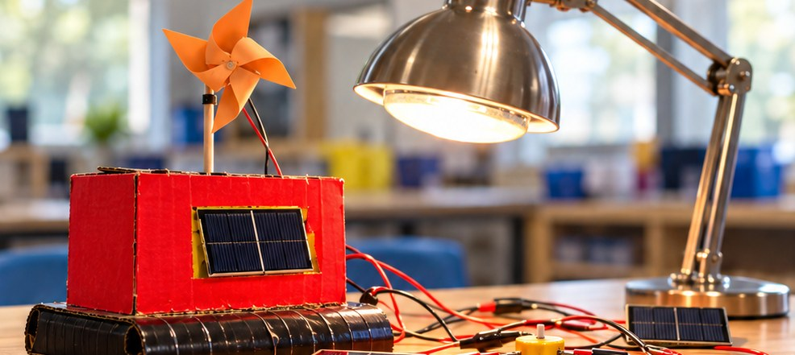

STEM at Falcon
STEM from First Questions to College-Level Engineering
Science, technology, engineering and math at Falcon start with a question and end with something students build, test and explain. The path runs from hands-on discovery in Kindergarten to AP and NOVA college courses in high school.

Every Grade
KG – G12
Science and math from Kindergarten onCoding
From Grade 3
Scratch, then micro:bit and ArduinoAP Courses
AP Math and Science
Calculus, Statistics, Environmental Science, Physics CCollege Credit
NOVA Courses
Such as multivariable calculus and engineeringHow We Teach STEM
Every STEM subject follows the three-dimensional model of teaching and learning: concepts, skills and content. In practice, that looks like this.
Start with a Question
Students question, predict, observe and measure before anyone hands them the answer.
Learn by Doing
Group experiments, models, simulations and design challenges, with students leading their own work.
Connect the Subjects
STEAM projects in every grade at Ashburn, and cross-subject units that link science and math to daily life.
Explain the Thinking
Students show a math problem four ways, keep lab notebooks and write up what they found.
STEM from KG to Grade 12
Each stage builds on the last, from hands-on materials to college-level courses.
Hands-On Discovery
Chantilly Campus- Science through inquiry, play and observing nature
- Math with manipulatives, games, math centers and small-group lessons
- Computer science with specialist teachers, with Scratch coding from Grade 3
- Projects like simple games, animated stories and coded quizzes
Labs, Algebra and Design
Ashburn Campus- Earth and space, life and physical science, with lab investigations
- Algebra, geometry and trigonometry, statistics and functions
- The full design cycle: apps, robotics, websites and 3D modeling
- Sciences, Mathematics and Design are IB MYP subject groups studied every year
Honors, AP and College Courses
Ashburn Campus- Honors Biology, Chemistry and Physics
- Mathematical Analysis and Honors math tracks
- AP Calculus AB / BC, AP Statistics, AP Environmental Science and AP Physics C: Mechanics
- NOVA multivariable calculus and engineering through dual enrollment
Explore Each Subject
See what students learn in each STEM subject, grade by grade, and meet the teachers.

Science
Investigating how the natural world works, through experiments, lab notebooks and scientific reports.
Explore Science ›
Mathematics
Number sense, reasoning and problem solving, each year building on the last.
Explore Mathematics ›
Computer Science, IT & Design
Coding, technology and designing solutions, from Scratch to micro:bit, Arduino and apps.
Explore Computer Science ›STEM in Action
Labs at our Ashburn campus where students build and code robots, and projects that reach beyond the classroom.

Students Take On the KidWind Challenge
Our middle and high school students explore renewable-energy engineering.
Read the Story ›
Exploring Renewable Energy with Dr. Diane Painter
Our elementary students discover how wind and solar energy work.
Read the Story ›
Science Outside the Classroom
Trips like this farm visit link science to daily life and caring for the environment.
Science at Falcon ›Advanced and College STEM
High school students who are ready for more can take AP courses at Falcon and college courses with Northern Virginia Community College (NOVA).
AP Math and Science at Falcon
Taught by Falcon teachers. Each course ends with the AP exam in May, and strong scores can earn credit at many colleges.
College Courses in STEM
Through dual enrollment, eligible students can take NOVA courses from Grade 9 and earn college credit, with a Falcon counselor guiding each plan.
Depending on NOVA’s offerings, students can also explore computer science, mathematics, natural sciences and health sciences. College credit and an associate degree are not guaranteed.
STEM Clubs After School and on Weekends
Optional, hands-on clubs that take projects further and prepare students for competitions like the KidWind Challenge, VEX Robotics, MathCON and Future City.
G6 – G12 After School
KG – G5 After School
Weekend Clubs by Grade
Weekday clubs are $35 a day and weekend clubs $50 a day. Choose only the days that suit your family.
See All Clubs ›Frequently Asked Questions
When does my child start coding?
Are there science labs?
Which AP STEM courses does Falcon offer?
Can my child earn college credit in STEM?
Are STEM clubs part of the school day?
See STEM in a Real Classroom
Tours run Sundays at Ashburn and Saturdays at Chantilly. Bring your child and your questions.